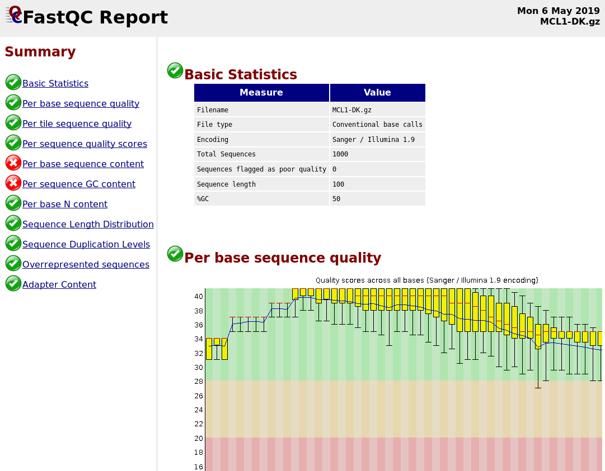

Quality Control
Contributors
 Bérénice Batut
Bérénice Batut
Questions
How to control quality of NGS data?
What are the quality parameters to check for each dataset?
How to improve the quality of a sequence dataset?
Objectives
Manipulate FASTQ files
Control quality from a FASTQ file
Use FastQC tool
Understand FastQC output
Use tools for quality correction
Why Quality Control?
Speaker Notes
Potential audience poll ideas:
- Sequenced something or assembled a genome or transcriptome?
- Can guess why we need to do QC on our data?
Comments:
- Process of removing low quality sequences that might corrupt downstream analyses
Where is my data coming from?

Speaker Notes
- Many sequencing techniques
- Huge diversity in protocols
- Knowledge about source of data (+expectations of how it looks) is important in QC process
- What is/isn’t normal for your data
Segue: Might be concerned about different processing for each
From experiments to data

Quality control = First step of the bioinformatics analyses
Speaker Notes
- But no matter what technique used, same file format
- Always should go through QC
Segue: So let’s look at how that data is stored
Sequences: FASTA
>Identifier1 (comment)
XXXXXXXXXXXXXXXXXXXXXXXXXXXXXXXXXXXXXXXXXXXXXXXXXXXXXXXXXXXX
XXXXXXXXXXXXXXXXXXXXXXXXXXXXXXXXXXXXXXXXXXXXXXXXXXXXXXXXXXXX
XXXXXXXXXXXXXXXXXXXXXXXXXXXXXXXXXXXXXX
>Identifier2 (comment)
XXXXXXXXXXXXXXXXXXXXXXXXXXXXXXXXXXXXXXXXXXXXXXXXXXXXXXXXXXXX
XXXXXXXXXXXXXXXXXXXXXXXXXXXXXXXXXXXXXXXXXXXXXXXXXXXXXXXXXXXX
XXXXXXXXXXXXXXXXXXXXXXXXXXXXXXXXXXXXXXXXXXXXXXXXXXXXXXXXXXXX
XXXXXXXXXXXXXXXXXXXXXXXXXXXXXXXXXXXXXXXXXXXXXXXXXXXXXXXXXXXX
XX
Speaker Notes
- familiar if you’ve seen genomic data before
- Starts with greater-than sign
- Then an identifier with no spaces
- Everything after a space is a comment
- Newline
- Everything up to next greater-than is sequence data (wrapping unnecessary)
Segue: But this is just sequence, and we have data from a sequencer, which includes quality
Sequences: FASTQ
@Identifier1 (comment)
XXXXXXXXXXXXXXXXXXXXXXXXXXXXXXXXXXXXXXXXXXXXXXXXXXXXXXX
+
QQQQQQQQQQQQQQQQQQQQQQQQQQQQQQQQQQQQQQQQQQQQQQQQQQQQQQQ
@Identifier2 (comment)
XXXXXXXXXXXXXXXXXXXXXXXXXXXXXXXXXXXXXXXXXXXXXXXXXXXXXXXXXXXXXXXXXX
+
QQQQQQQQQQQQQQQQQQQQQQQQQQQQQQQQQQQQQQQQQQQQQQQQQQQQQQQQQQQQQQQQQQ
Speaker Notes
- Four lines
- @ + identifier on first line, just like fasta
- sequence
- +
- quality score characters
Segue: so what do the quality chars mean?
Quality score
Measure of the quality of the identification of the nucleobases
generated by automated DNA sequencing
| Phred Quality Score | Probability of incorrect base call | Base call accuracy |
|---|---|---|
| 10 | 1 in 10 | 90% |
| 20 | 1 in 100 | 99% |
| 30 | 1 in 1000 | 99.9% |
| 40 | 1 in 10,000 | 99.99% |
| 50 | 1 in 100,000 | 99.999% |
| 60 | 1 in 1,000,000 | 99.9999% |
</small>
Speaker Notes
- Logarithmic scale
Quality score

Speaker Notes
- Solexa uses slightly different measure
Quality score encoding

Speaker Notes
- Earlier saw sequence + quality were same length of text
- Each score encoded as a single character
- Uses ASCII (common computer encoding, maps numbers to characters)
- Each technology has a different mapping
- Mostly see illumina 1.8 these days, others only if historical
Identifying Potential Quality Issues
FastQC

Speaker Notes
- Analyses your fastq files
- Has many modules
-
They report on different aspects of the sequence
- Modules include:
- Basic Statistics
- Per base sequence quality
- Per sequence quality scores
- Per base sequence content
- Per base GC content
- Per sequence GC content
- Per base N content
- Sequence Length Distribution
- Sequence Duplication Levels
- Overrepresented sequences
- Kmer Content
Quality score: Per-base

Good quality score
Per-base Quality
Bad quality score
Per-base Quality
Intermediate quality score
Per-sequence Quality
Per-tile Quality
Speaker Notes In Illumina libraries, the original sequence identifier is retained. Encoded in these is the flowcell tile from which each read came.
There might be transient problems such as bubbles going through the flowcell, or more permanent problems such as smudges on the flowcell, or debris inside the flowcell lane.
This graph will only appear with Illumina libraries which retain their original sequence identifiers. The graph allows to check the quality scores from each tile across all bases, to see if there was a loss in quality associated with only one portion of the flowcell. The plot shows the deviation from the average quality for each tile. The colours are on a cold to hot scale, with cold colours being positions where the quality was at or below the average for that base in the run, and hot colours to indicate that a tile had worse quality reads than other tiles for that base. In the example below you can see that certain tiles show consistently poor quality. A good plot should be blue all over.
Per-base Sequence Content
Speaker Notes The per-base sequence content highlights the proportion of each base in each position of a sequence for which each of the four DNA bases have been called. In a random library there would be little to no difference between the different bases of a sequence run. The relative amount of each base should reflect the overall amount of these bases, but in any case they should not be hugely imbalanced from one another. It is worth noting that some types of libraries will always produce biased sequence composition, normally at the start of the read. Libraries produced by priming with random hexamers (including nearly all RNA-Seq libraries) and those which were fragmented using transposases, inherit an intrinsic bias in the positions at which the reads start. This bias does not concern an absolute sequence, but instead provides an enrichment of a number of different K-mers at the 5’ end of the reads. Whilst this is a true technical bias, it isn’t something which can be corrected by trimming and in most cases doesn’t seem to adversely affect the downstream analysis. It will however produce a warning or error in this module.
There are a number of common scenarios for these issues:
- Over-represented sequences
- Biased fragmentation
- Biased composition libraries
- Aggressive adapter trimming
Per-sequence GC content

Speaker Notes The GC content distribution of most samples should follow a normal distribution. In some cases, a bi-modal distribution can be observed, especially for metagenomic data sets. An unusually shaped distribution could indicate a contaminated library or some other kinds of biased subset. A normal distribution which is shifted indicates some systematic bias which is independent of base position. Such a systematic bias creating a shifted normal distribution won’t be flagged as an error, since the tool cannot guess what the provided genome’s GC content should be.
Issues in the GC content distribution usually indicate a problem with the library. Sharp peaks on an otherwise smooth distribution are normally the result of a specific contaminant (adapter dimers for example), which may well be picked up by the over-represented sequences module. Broader peaks may represent contamination with a different species.
Per-base N content

Speaker Notes Sequences can contain the ambiguous base N for positions that could not be identified as a particular base. A high number of Ns can be a sign for a low quality sequence or even dataset. If no quality scores are available, the sequence quality can be inferred from the percent of Ns found in a sequence or dataset.
If a sequencer is unable to make a base call with sufficient confidence then it will normally substitute an N rather than a conventional base call. It’s not unusual to see a very low proportion of Ns appearing in a sequence, especially nearer the end of a sequence. However, if this proportion rises above a few percent it suggests that the analysis pipeline was unable to interpret the data well enough to make valid base calls.
Sequence length distribution
Speaker Notes Some high throughput sequencers generate sequence fragments of uniform length, while others can output reads of wildly varying lengths. The length distribution can be then used as quality measure. You would expect a normal distribution for the best result. However, most sequencing results show a slowly increasing and then a steep falling distribution.
FastQC generates a graph showing the distribution of fragment sizes in the file which was analysed. In many cases this will produce a simple graph showing a peak only at one size, but for variable length FASTQ files this will show the relative amounts of each different size of sequence fragment.
This module will raise a warning if all sequences are not the same length. This module will raise an error if any of the sequences have zero length.
Duplicated sequences

Speaker Notes This quality check module counts the degree of duplication for every sequence in the library, and creates a plot showing the relative number of sequences with different degrees of duplication:
- the blue line represents the full sequence set, showing how its duplication levels are distributed;
- the red line represents the de-duplicated sequences, plotting the proportions of deduplicated sequence sets which come from different duplication levels in the original data.
In genomic projects, sequence duplication is investigated. Duplicated sequences can arise when there are too few fragments present at any stage prior to sequencing.
This module issues a warning if non-unique sequences make up for more than 20% of the total sequences. An error is raised instead if non-unique sequences make up for more than 50% of the total.
Tag sequences: Adapter contamination

Speaker Notes Tag sequences are artifacts at the ends of sequence reads such as multiplex identifiers, adapters, and primer sequences that were introduced during pre-amplification with primer-based methods. The base frequencies across the reads present an easy way to check for tag sequences. If the distribution seems uneven (high frequencies for certain bases over several positions), it could indicate some residual tag sequences. This doesn’t indicate a problem as such - just that the sequences will need to be adapter trimmed before proceeding with any downstream analysis.
To investigate tag or adapter content, FastQC generates a plot showing a cumulative percentage count of the proportion of the library which has seen each of the adapter sequences at each position. Once a sequence has been seen in a read it is counted as being present right through to the end of the read so the percentages you see will only increase as the read length goes on.
Tag sequences: K-mer content

Speaker Notes Another way to find tag sequences is to look at the K-mer content, and find those which do not have even coverage through the length of your reads and could correspond to tag sequences.
K-mers with positionally biased enrichment are reported. The top 6 most biased K-mer are additionally plotted to show their distribution.
Over-represented K-mers will appear as sharp spikes at a single point in the sequence, deviating from what should be a progressive or broad enrichment.
Improving the quality of sequences
- Filtering of sequences
- with small mean quality score
- too small
- with too many N bases
- based on their GC content
- …
- Cutting/Trimming sequences
- from low quality score parts
- tails
- …
Key Points
- Run quality control on every sequencing dataset before any other analyses
- Choose QC parameters carefully
- Re-run FastQC to check the impact of the quality control
Thank you!
This material is the result of a collaborative work. Thanks to the Galaxy Training Network and all the contributors! This material is licensed under the Creative Commons Attribution 4.0 International License.
This material is licensed under the Creative Commons Attribution 4.0 International License.